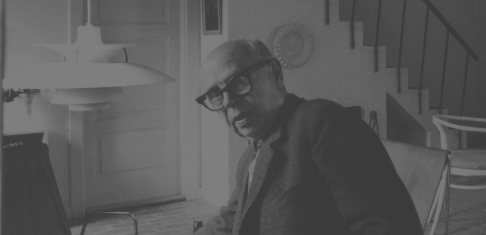
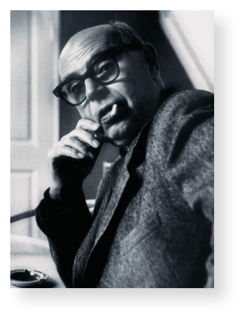
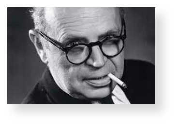
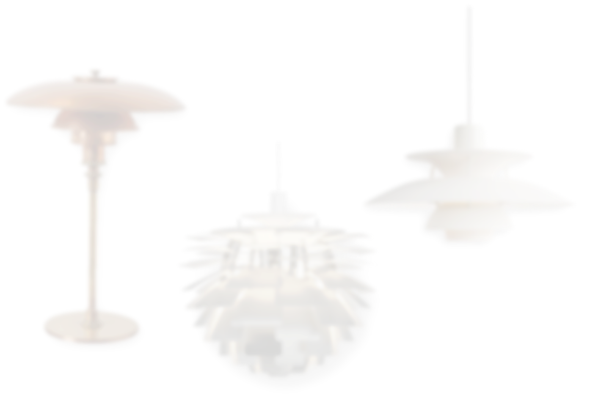
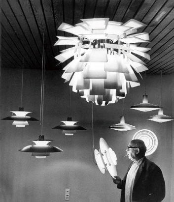

1894~1967
‘POUL HENNINGSEN’
‘The Best Designer of ‘Louis Poulsen’

SCROLL DOWN
‘루이스 폴센의 역사적인
ㅤ최고의 디자이너’
ㅤ최고의 디자이너’


06
013481
POUL HENNINGSEN
1894 ~ 1967
1894 ~ 1967
덴마크의 최초이자 최고의 조명 이론 전문가이자
‘루이스 폴센’의 디자이너
작가 아버지와 풍자작가 어머니 사이에서 덴마크 Ordrup에서 태어난 폴 헤닝센.
그의 집에는 많은 저명한 작가들이 방문했고 이해심 많고 선진적인 사고의
부모 밑에서 행복한 어린 시절을 보냈다.
그의 집에는 많은 저명한 작가들이 방문했고 이해심 많고 선진적인 사고의
부모 밑에서 행복한 어린 시절을 보냈다.
대학에서 건축을 전공했으나 졸업하지 않고 발명가나 화가가 되려고 노력했다.
그는 조명디자인으로 유명하지만 다양한 분야에서 재능을 발휘했다.
그렇게 루이스폴센에서 최고의 디자이너로 활동하였고
'PH'시리즈가 탄생하게 된다.
그는 조명디자인으로 유명하지만 다양한 분야에서 재능을 발휘했다.
그렇게 루이스폴센에서 최고의 디자이너로 활동하였고
'PH'시리즈가 탄생하게 된다.
“인간에게는 어둠과 빛이 모두 필요하다.”
덴마크의 건축가이자 디자이너인 폴 헤닝센은
19세기 말 에디슨의 전구 발명 이후
본격적으로 조명 디자이너의 길을 걷는다.
헤닝센의 디자인은 ‘빛을 어떻게 가리느냐’라는 고민에서 시작됐다.
산업화와 함께 전기조명에 대한 수요는 늘었지만
가스등의 은은한 조명을 사용하던 이들에게 전기조명은 빛이 너무 강렬했던 것이다.
19세기 말 에디슨의 전구 발명 이후
본격적으로 조명 디자이너의 길을 걷는다.
헤닝센의 디자인은 ‘빛을 어떻게 가리느냐’라는 고민에서 시작됐다.
산업화와 함께 전기조명에 대한 수요는 늘었지만
가스등의 은은한 조명을 사용하던 이들에게 전기조명은 빛이 너무 강렬했던 것이다.
‘PH 시리즈의 시작’
그는 단순히 갓을 덧대어 빛을 가리는 것이 아니라 빛을 발현하면서도 한편으로는 그 빛이 어떤 그림자가 생길지까지 고민했다.
미적인 아름다움을 추구하면서도 그림자의 형태와 공간 전체의 조도를 밝히는 기능까지 뛰어난 조명을 만들어낸 것이다.
가장 대중적으로 알려진 PH5의 경우 세 개의 갓이 전체 조명의 중심이다.
이 세 개의 갓은 4:2:1의 비율을 이루며 어느 각도에서든 광원이 보이지 않는 은은한 분위기를 연출해낸다.
PH는 짐작하다시피 폴 헤닝센(Poul Henningsen)의 약자이고 5는 크기를 뜻한다.
조명의 가장 큰 지름이 50cm 되는 것. 1926년 출시된 PH5를 기본으로 수십 년에 걸쳐 다양한 크기의 PH 시리즈가 제작된다.
천장에 다는 펜던트 조명과 테이블 조명, 플로어 조명 등 크기와 형태에 따라 다양한 시리즈의 제품이 개발된다
미적인 아름다움을 추구하면서도 그림자의 형태와 공간 전체의 조도를 밝히는 기능까지 뛰어난 조명을 만들어낸 것이다.
가장 대중적으로 알려진 PH5의 경우 세 개의 갓이 전체 조명의 중심이다.
이 세 개의 갓은 4:2:1의 비율을 이루며 어느 각도에서든 광원이 보이지 않는 은은한 분위기를 연출해낸다.
PH는 짐작하다시피 폴 헤닝센(Poul Henningsen)의 약자이고 5는 크기를 뜻한다.
조명의 가장 큰 지름이 50cm 되는 것. 1926년 출시된 PH5를 기본으로 수십 년에 걸쳐 다양한 크기의 PH 시리즈가 제작된다.
천장에 다는 펜던트 조명과 테이블 조명, 플로어 조명 등 크기와 형태에 따라 다양한 시리즈의 제품이 개발된다
헤닝센의 작품 중 1958년에 출시한 PH아티초크는 마스터피스라고 추앙받는 걸작이다.
덴마크의 랑게리니 파빌리온 레스토랑을 위해 제작됐는데
현재까지도 17개의 펜던트를 그대로 유지하고 있다고 하니 여기에서도 타임리스 디자인의 면모를 읽을 수 있다.
헤닝센은 제품 개발을 위해 1년이 넘는 기간 동안 암실에서 무수한 실험과 계산을 반복했다.
이 같은 노력 끝에 빛이 가장 효율적이며 시각적으로 굴절·반사되는 방법을 연구해 PH아티초크를 완성해낸다.
덴마크의 랑게리니 파빌리온 레스토랑을 위해 제작됐는데
현재까지도 17개의 펜던트를 그대로 유지하고 있다고 하니 여기에서도 타임리스 디자인의 면모를 읽을 수 있다.
헤닝센은 제품 개발을 위해 1년이 넘는 기간 동안 암실에서 무수한 실험과 계산을 반복했다.
이 같은 노력 끝에 빛이 가장 효율적이며 시각적으로 굴절·반사되는 방법을 연구해 PH아티초크를 완성해낸다.
“테이블 조명과 펜던트 조명에는
별도의 코팅을 하지 않아요.
제품에는 시간이 흐를수록 자연스럽게 변색이 일어나게 되죠.
별도의 코팅을 하지 않아요.
제품에는 시간이 흐를수록 자연스럽게 변색이 일어나게 되죠.
그 이유가 빈티지적 가치를 발휘하기 때문이에요.”
헤닝센의 제품들은 시대에 따라 소재와 색감을 달리하며 다양한 변신을 꾀하고 있다.
이전까지는 분홍, 파랑, 초록 등 다양하고 과감한 색을 입히는 것에 주목했다면 이젠 소재의 변화에 주목했다.
황동과 구리, 놋쇠 소재를 이용해 자연 소재 그대로의 느낌을 재현하고자 하는 것.
그렇게 헤닝센은 조명이 가져야 할 3가지 원칙,
(눈부시지 않아야 한다. 불빛을 원하는 곳으로 집중 시킬 수 있어야 한다. 아름다운 분위기를 연출할 수 있어야 한다.)을
브랜드 철학으로 내세우며, 죽기 전까지 1000개가 넘는 조명을 디자인하였다.
이전까지는 분홍, 파랑, 초록 등 다양하고 과감한 색을 입히는 것에 주목했다면 이젠 소재의 변화에 주목했다.
황동과 구리, 놋쇠 소재를 이용해 자연 소재 그대로의 느낌을 재현하고자 하는 것.
그렇게 헤닝센은 조명이 가져야 할 3가지 원칙,
(눈부시지 않아야 한다. 불빛을 원하는 곳으로 집중 시킬 수 있어야 한다. 아름다운 분위기를 연출할 수 있어야 한다.)을
브랜드 철학으로 내세우며, 죽기 전까지 1000개가 넘는 조명을 디자인하였다.
Copyright 2023. JANGSUNGJUN All rights reserved.



